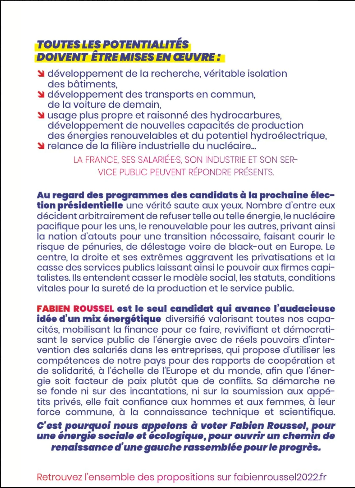
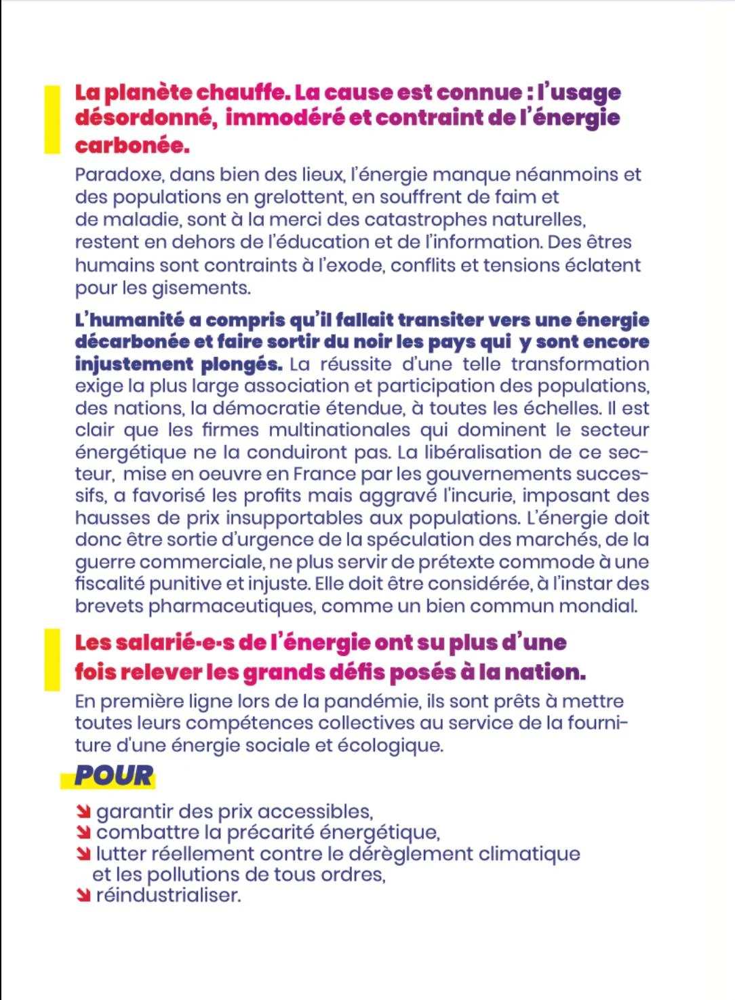

Document de campagne relayé
Des salariés de l’énergie appellent à voter Fabien Roussel. Le document, première partie
Date indiquée par Facebook · 14 mars 2022
Repères éditoriaux
Le partage conserve la première partie du document. La deuxième partie est accessible dans la publication associée.
Texte conservé avec la publication
Plus de 800 salarié-e-s de l'énergie appellent à voter Fabien Roussel (1/2)


Sources
Archive rouge · export Facebook · AR-0002-FB-01930
À lire aussi · L’appel de salariés de l’énergie à voter Fabien Roussel